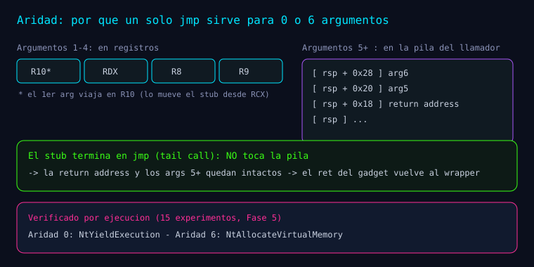

Serie: Kagemusha
Kagemusha — Fase 5: generalización y aridad
Kagemusha — Fase 5: generalización y aridad
Esta entrada documenta la Fase 5 (M5) tal como está registrada en el README.md, en docs/research/experimentos-fase5.md y en docs/evidencias/m5.txt.
Del README: "Objetivo. Ejecutar un catálogo de syscalls con un único template ASM (macro propio)."

Implementación (según el README)
src/asm/syscalls.asm: macroKAGE_STUB name, slot→ unPROCpor slot con
mov r10,rcx; mov eax,[g_SsnTable+slot*4]; jmp [g_GadgetTable+slot*8].
src/core/core.c: catálogo de 8 syscalls (el orden define los slots) +KageInitialize
transaccional.
src/wrappers/wrappers.c+include/kage/wrappers.h: 8 wrappers tipados_I.
La macro (del plan de arquitectura)
KAGE_STUB MACRO name, slot
name PROC
mov r10, rcx
mov eax, DWORD PTR [g_SsnTable + slot*4]
jmp QWORD PTR [g_GadgetTable + slot*8]
name ENDP
ENDMDel plan: "El ASM nunca contiene el SSN literal ni el 0F 05: solo lee las tablas del core."
El catálogo (8 syscalls, del README)
NtClose, NtQuerySystemInformation, NtQueryInformationProcess, NtAllocateVirtualMemory, NtFreeVirtualMemory, NtProtectVirtualMemory, NtQuerySystemTime, NtYieldExecution.
Por qué un solo macro sirve para cualquier aridad (del README)
"El
jmpfinal es un tail-call: preserva pila y dirección de retorno, así que los argumentos 5+ (que viajan en la pila) llegan intactos al kernel. Verificado conNtAllocateVirtualMemory(6 argumentos)."
Pruebas y experimentos (del README y experimentos-fase5.md)
Del README: "T12 ejecuta los 8 y valida NTSTATUS (+ negativos). Además, 15 experimentos dedicados (T18)."
Los 15 experimentos (de docs/research/experimentos-fase5.md):
| # | Experimento | Resultado |
|---|---|---|
| 1 | KageInitialize() resuelve el catálogo | ✅ KAGE_OK |
| 2 | Las 8 entradas de g_SsnTable quedan pobladas | ✅ |
| 3 | Los 8 gadgets son 0F 05 C3 | ✅ |
| 4 | g_SsnTable[slot 0] coincide con el resolver | ✅ |
| 5 | Las 8 entradas de tabla coinciden con el resolver | ✅ |
| 6 | SSN == SSN del stub real (por slot con stub real) | ✅ 7/8 (ver Hallazgo) |
| 7 | El bloque ASM contiene ≥ 8 stubs | ✅ |
| 8 | Aridad 0 — NtYieldExecution | ✅ |
| 9 | Aridad 1 — NtClose | ✅ |
| 10 | Aridad 4 — NtQuerySystemInformation | ✅ |
| 11 | Aridad 5 — NtQueryInformationProcess | ✅ |
| 12 | Aridad 6 — NtAllocateVirtualMemory | ✅ |
| 13 | Round-trip protect + free | ✅ |
| 14 | Caso negativo: clase inválida → STATUS_INVALID_INFO_CLASS | ✅ |
| 15 | NtQuerySystemTime monótono creciente (2 lecturas) | ✅ |
Hallazgo: un slot del catálogo no es un stub de syscall
De docs/research/experimentos-fase5.md:
"
NtQuerySystemTimese exporta comojmp ntdll!RtlQuerySystemTime(implementación en user-mode), no como stub4C 8B D1 B8. Por eso el experimento 6 compara 7/8 stubs. Sin embargo, FreshyCalls le asigna igualmente un SSN por su posición en el orden de exports, y la ejecución indirecta funciona (experimento 15: devuelve tiempo válido y monótono)."
Nota del mismo documento: "El jmp final del trampolín garantiza que las aridades 5 y 6 (argumentos en la pila) lleguen intactas al kernel; verificado con NtQueryInformationProcess (5) y NtAllocateVirtualMemory (6)."
Evidencia (docs/evidencias/m5.txt, extracto real)
0:000> sxi c0000008
0:000> u Kagemusha!KageStubStart L6
Kagemusha!KageStubStart:
00007ff7`3d5931b0 4c8bd1 mov r10,rcx
00007ff7`3d5931b3 8b05e7b70800 mov eax,dword ptr [Kagemusha!g_SsnTable (00007ff7`3d61e9a0)]
00007ff7`3d5931b9 ff25e1b60800 jmp qword ptr [Kagemusha!g_GadgetTable (00007ff7`3d61e8a0)]
Kagemusha!KageNtQuerySystemInformationStub:
00007ff7`3d5931bf 4c8bd1 mov r10,rcx
00007ff7`3d5931c2 8b05dcb70800 mov eax,dword ptr [Kagemusha!g_SsnTable+0x4 (00007ff7`3d61e9a4)]
00007ff7`3d5931c8 ff25dab60800 jmp qword ptr [Kagemusha!g_GadgetTable+0x8 (00007ff7`3d61e8a8)]
0:000> bp Kagemusha!NtAllocateVirtualMemory_I
0:000> g
Breakpoint 0 hit
Kagemusha!NtAllocateVirtualMemory_I:
00007ff7`3d5930a0 4c894c2420 mov qword ptr [rsp+20h],r9 ss:0000006c`80aff8a8=0000000000000000
0:000> ? poi(Kagemusha!g_GadgetTable+18)
Evaluate expression: 140721521955010 = 00007ffc`485410c2
0:000> bp poi(Kagemusha!g_GadgetTable+18)
0:000> g
Breakpoint 1 hit
ntdll!NtAllocateVirtualMemory+0x12:
00007ffc`485410c2 0f05 syscall
0:000> r eax
eax=18
0:000> r rip
rip=00007ffc485410c2Se observa el mismo patrón con distinto offset de tabla por slot (+0x0, +0x4, +0x8) y, para NtAllocateVirtualMemory (6 argumentos), el SSN 0x18 con el RIP dentro de ntdll.
Hallazgo (debugger), del README
"
NtClose(handle inválido)genera una excepción first-chancec0000008que ntdll maneja; para scripts de cdb hay que ignorarla (sxi c0000008)."
Por eso el transcript m5.txt empieza con sxi c0000008.
Reproducir (del README)
tools\build.cmd
bin\Kagemusha_tests.exe
bin\Kagemusha.exe --dump
cdbX64 -cf tools\cdb_scripts\m5_catalog.txt -logo docs\evidencias\m5.txt bin\Kagemusha.exeCómo sigue la serie
Toda la serie (navegable): Kagemusha.
Bibliografía y referencias
- Fuentes primarias:
README.md,docs/research/experimentos-fase5.md,
docs/evidencias/m5.txt, docs/plan-arquitectura-v1.md, src/asm/syscalls.asm, src/core/core.c, src/wrappers/wrappers.c.
- Microsoft Learn — x64 calling convention.
Aprender a romper para poder defender.